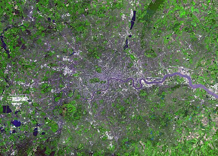
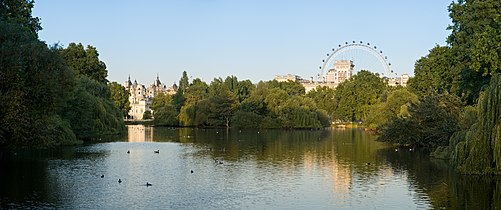
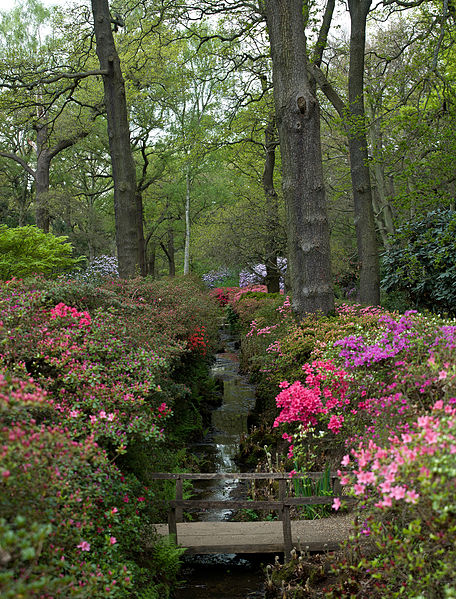
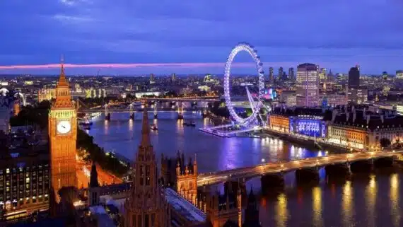

Géographie
Que désigne-t-on exactement par « Londres » ? Ses parcs, ses espaces verts et son climat océanique.
Définition de Londres
La dénomination courante « Londres » peut désigner plusieurs ensembles géographiques ou administratifs différents, ce qui prête parfois à confusion. Jusqu’en 1889, le nom de Londres était réservé au mile carré de la Cité de Londres, d’où la ville est née à l’époque romaine.
À la suite de son énorme expansion, qui avait amené le tissu urbain à absorber toute la Cité de Westminster et d’autres banlieues, le comté de Londres a été créé en 1889. Il couvrait 303 km² et a existé de 1889 à 1965 : à cette période, le terme Londres désignait cette zone, qu’on appelle aujourd’hui Inner London (Londres intérieure).
En 1965, le comté de Londres a été remplacé par le Greater London (Grand Londres), beaucoup plus vaste, qui inclut des quartiers extérieurs appelés aujourd’hui Outer London (Londres extérieure). L’ensemble correspond à l’immense ville actuelle, qui couvre 1 577 km² et comptait 8 631 000 habitants en 2017.

Parcs et espaces verts
Un rapport de 2013 de la City of London Corporation a déclaré que Londres est la « ville la plus verte » d’Europe, avec 14 000 hectares de parcs publics, de bois et de jardins. Avec 40 % d’espaces verts et aquatiques, Londres est considérée comme l’une des capitales les plus vertes au monde. La société d’histoire naturelle de Londres y a recensé plus de deux mille espèces de plantes à fleurs, 60 espèces d’oiseaux, 47 variétés de papillons et 260 sortes d’araignées. Les amphibiens sont également très présents, notamment les tritons, les grenouilles rousses et les crapauds.
Hyde Park
Hyde Park est le plus grand parc du centre de Londres et l’un des neuf parcs royaux de la capitale. Il mesure plus de deux kilomètres de long et près d’un kilomètre de large. C’est aussi l’un des quartiers de la Cité de Westminster.

St James’s Park
St James’s Park est le plus ancien des neuf parcs royaux de Londres. Situé dans la Cité de Westminster, il s’étend sur 23 hectares. Il est délimité au nord par The Mall, à l’est par Horse Guards, au sud par Birdcage Walk et à l’ouest par Buckingham Palace Road.

Richmond Park
Richmond Park est le plus grand parc de Londres. Il se trouve dans le district de Richmond upon Thames et c’est l’un des parcs royaux de la capitale. Sa superficie est de 9,5 km². On peut y observer une multitude d’espèces animales, comme l’écureuil gris.


Climat
Le climat de Londres est un exemple typique de climat océanique. Les précipitations sont régulières toute l’année, souvent sous forme de bruine, contrairement à l’ouest du Royaume-Uni où elles sont plus fortes. Il tombe en moyenne 622,5 mm de pluie par an, et février est le mois le plus sec.
| Mois | Jan. | Fév. | Mars | Avr. | Mai | Juin | Juil. | Août | Sep. | Oct. | Nov. | Déc. | Année |
|---|---|---|---|---|---|---|---|---|---|---|---|---|---|
| Température minimale moyenne (°C) | 1,8 | 1,7 | 3,7 | 4,7 | 7,9 | 10,8 | 13 | 12,7 | 10,3 | 7,4 | 4,1 | 2,1 | 6,7 |
| Température moyenne (°C) | 5 | 5,2 | 7,5 | 9,6 | 13 | 15,9 | 18,3 | 18 | 15,2 | 11,6 | 7,7 | 5,3 | 11,1 |
| Température maximale moyenne (°C) | 8,2 | 8,7 | 11,6 | 14,4 | 18 | 21 | 23,5 | 23,2 | 20 | 15,8 | 11,3 | 8,5 | 15,4 |
| Ensoleillement (heures) | 59,8 | 79,9 | 118,2 | 173,3 | 205,3 | 203,6 | 218,4 | 211,1 | 146,4 | 117,2 | 70,6 | 49,6 | 1 653,3 |
| Précipitations (mm) | 57,2 | 41,9 | 42,8 | 45,3 | 48,8 | 49,3 | 46,8 | 51,2 | 52,2 | 69,7 | 60,6 | 56,6 | 622,5 |
Galerie
